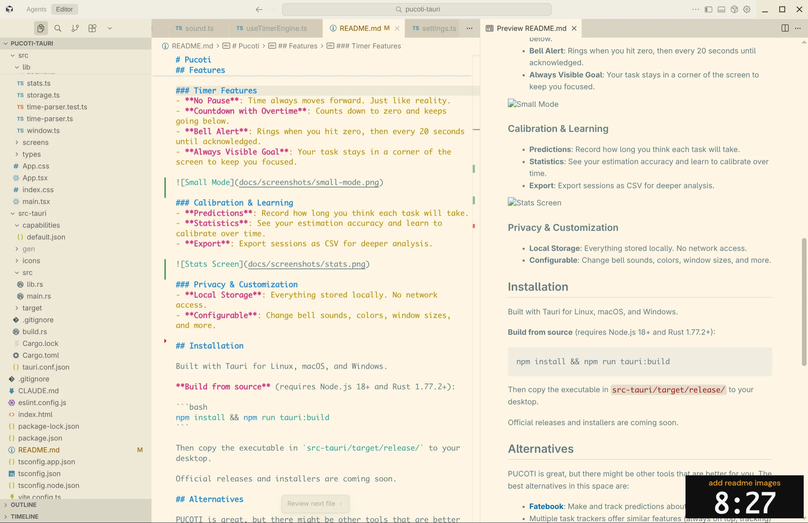
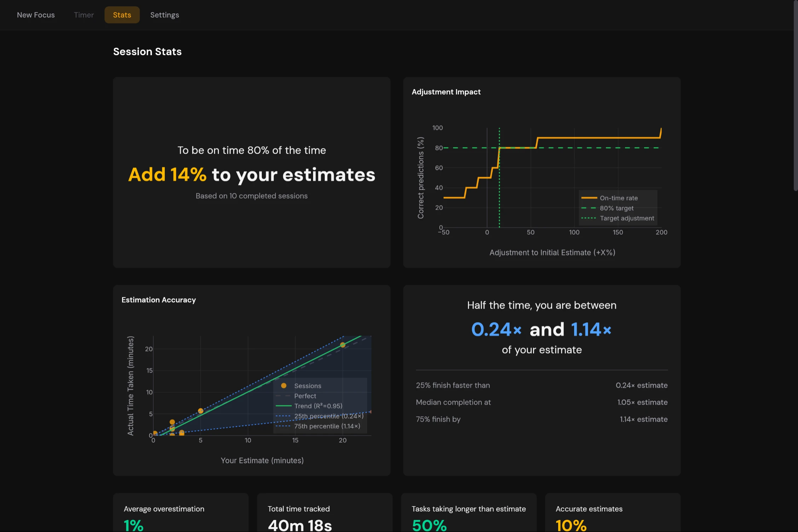

Use your time with intention.
- 1Write down what you want to do.
- 2Give it a time.
- 3Start, and finish it.
- 4Reflect, and repeat.

A small loop to build your own practice on.
Do one thing at a time.
What you're doing stays in a corner of the screen, over everything else.

Reflect after every task.
You see how far off you were, while you still remember why.
send one quick email
Predicted 5m, took 23m
360% over
How could I have seen that this would take longer?
Learn how long things really take you.
Everyone falls for the planning fallacy. Guess, compare, ask why, and your guesses get better. The stats show by how much.

Know where your day went.
Every timer is kept: what you meant to do, and how long it took.
Today
09:05plan the day10m → 12m
09:20send one quick email5m → 23m
09:45fix the login bug45m → 41m
10:30review the PR20m → 26m
And also
- No pause. Time keeps going.
- Keeps ringing, so you can't ignore it
- Stack timers, if you must be interrupted
- Keyboard-driven
- A full-screen timer for a room or a workshop
- Hide the clock, test your sense of time
- Run your own scripts when a timer starts or ends
- No account. Your data stays with you.
- Extra support for Sway, niri and GNOME
Next: download Pucoti.
Download
Linux
Download the .deb, then open it to install, or run:
sudo apt install ~/Downloads/Pucoti_amd64.debDownload the .rpm, then open it to install, or run:
sudo dnf install ~/Downloads/Pucoti_x86_64.rpmWindows
It isn't signed, so Windows may warn you: choose "More info", then "Run anyway".
macOS
Pucoti isn't signed, so macOS won't open a plain download. Paste this in a terminal instead, for
base=https://github.com/ddorn/pucoti-tauri/releases/latest/download
curl -L $base/Pucoti_aarch64.app.tar.gz | tar -xz -C /Applications
xattr -cr /Applications/Pucoti.app && open /Applications/Pucoti.appbase=https://github.com/ddorn/pucoti-tauri/releases/latest/download
curl -L $base/Pucoti_x64.app.tar.gz | tar -xz -C /Applications
xattr -cr /Applications/Pucoti.app && open /Applications/Pucoti.app